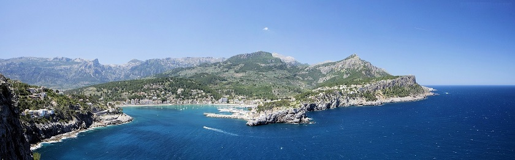
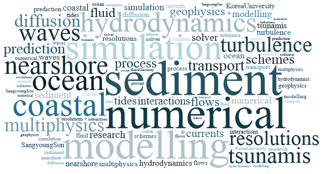

|  |
In the shallow coastal region, fluid flows may exhibit complicated behaviors strongly connected to physical effects such as turbulence, wave-structure interaction, wave-current interaction, wave breaking and fluid-density variations. Sometimes, complex hydrodynamic motions result in unexplainable events, for example, huge whirlpool inside harbor. As modeling of such complex phenomena requires dedicated considerations of the controlling physics, it is still recognized as important and so is popular topic in coastal and ocean engineering. Therefore, our research interests are basically towards a better understanding of coastal hydrodynamic processes which tend to be highly complex and turbulence-dominant due to a variety of physical factors, for example, irregular geometry, wave breaking, pycnocline, thermocline, flow-structure interactions and natural extreme events in the nearshore area. Our works typically expand into coastal hazards and environmental impacts which is directly linked to coastal hydrodynamics.
|
 |
Development of Real-Time Wave Modeling Algorithm for Enhanced Maritime Military Security
Sponsor: Korea National Defense University
Total amount: confidential
Duration: 5 months starting from Jul., 2020
Study on Advancing Tsunami Predictionand Observation Techniques Considering Tidal and Bathymetic Condition
Sponsor: Korea Metrological Administration
Total amount: (Son's portion) $33,000 (₩ 33,000K, External sourcing)
Duration: 10 months starting from Mar., 2020
Development of an Immersive Wave-Current Model based on 3D Virtual-Reality Architecture
Sponsor: National Research Foundation of Korea
Total amount: $500,000 (₩ 500,000K)
Duration: 54 months starting from Sep., 2019
Physical Interaction across the Atmosphere-Ocean interface using Field-ready Coupled Particle Image Velocimetry [KRF]
Sponsor: National Research Foundation of Korea
Total amount: $300,000 (₩ 300,000K)
Duration: 51 months starting from Sep., 2019
Development of Tsunami Prediction Technique Considering Fault Failure History
Sponsor: Korea Meteorological Administration
Total amount: $500,000 (₩ 500,000K)
Duration: 30 months starting from July, 2018
Practical Technologies for Coastal Erosion Control and Countermeasure
Sponsor: Ministry of Oceans and Fisheries
Total amount(Son's portion): $350,000 (₩ 350,000K)
Duration: 43 months starting from June, 2018
Basic research for development of storm surge evaluation method for the design basis and the beyond design basis sea water level of nuclear power plant
Sponsor: Korea Institute of Nuclear Safety (KINS)
Total amount: $30,000 (₩ 30,000K)
Duration: 12 months starting from Jan, 2018
Development of Faster-Than-Realtime, Integrated Inundation Model based on GPU-Acceleration
Sponsor: National Research Foundation of Korea
Total amount: $150,000 (₩ 150,000K)
Duration: 36 months starting from June, 2017
Development of spreading mega complex disaster forecasting technology based on scenarios
Sponsor: Ministry of the Interior and Safety
Total amount(Son's portion): $70,000 (₩ 70,000K)
Duration: 21 months starting from April, 2017
Development of the Evaluation Technology for Complex Causes of Inundation Vulnerability and the Response Plans in Coastal Urban Areas for Adaptation to Climate Change
Sponsor: Ministry of the Interior and Safety
Total amount(Son's portion): $240,000 (₩ 240,000K)
Duration: 48 months starting from May, 2015
Development of a high-resolution oil spill and transportation model applicable to coastal area in Ulsan
Sponsor: Ulsan Green Environment Center
Total amount: $20,000 (₩ 20,000K)
Duration: 9 months starting from April, 2015
Development of parallelized and coupled numerical model for multi-grids, multi-dimensional and highly-efficient wave simulation
Sponsor: National Research Foundation of Korea
Total amount: $150,000 (₩ 150,000K)
Duration: 36 months starting from May, 2014